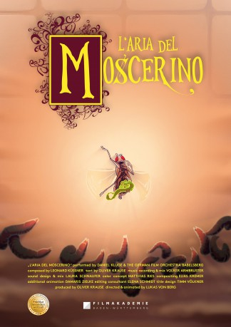

IMDB-Wertung: 7.5 / 10
IMDB-Wertung: 7.5 / 10  Metascore:
Metascore: 
A tiny fruit fly gets swatted. But against all odds, it defies death the Italian way.
 IMDB-Wertung: 7.5 / 10 Metascore:
A tiny fruit fly gets swatted. But against all odds, it defies death the Italian way.
Jahr: 2017
Dauer: 4 Minuten
FSK:
Land: Deutschland Studio: Filmakademie Baden-WürttembergTonspuren:
Untertitel:
Auflösung: 720p (1280x720) Größe: 74 MB
Genre: Animation/Trick, Kurzfilm
Regisseur: Lukas von Berg
Drehbuch: Oliver Krause
Soundtrack: Leonard Küßner
Darsteller:
Datei: X:\HD-Trick\Tod einer Fruchtfliege (2017, FSK, 1280x720).mkv seit 02.10.2019
Festplatte: Kinder-Filme+Trick
 Es gibt insgesamt 28 Filme in der Gruppe 'HD-Trick'
Es gibt insgesamt 28 Filme in der Gruppe 'HD-Trick'